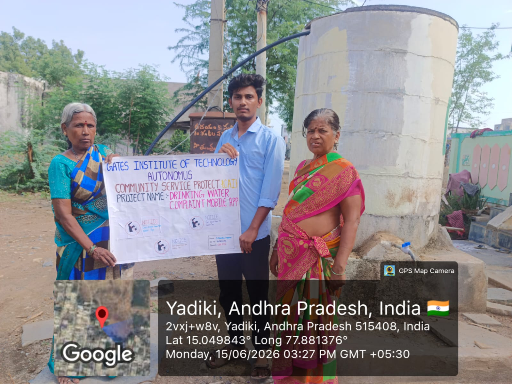
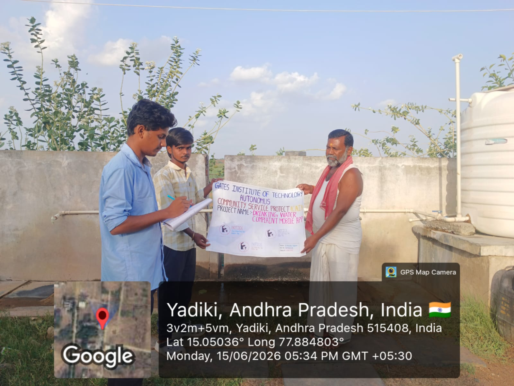
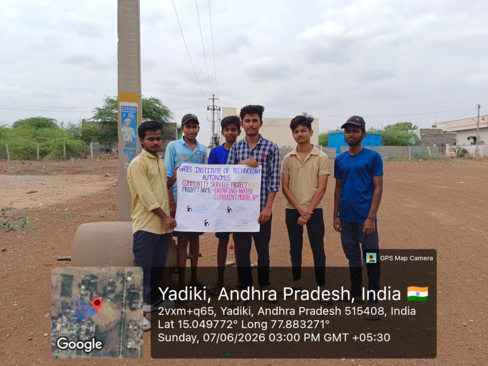
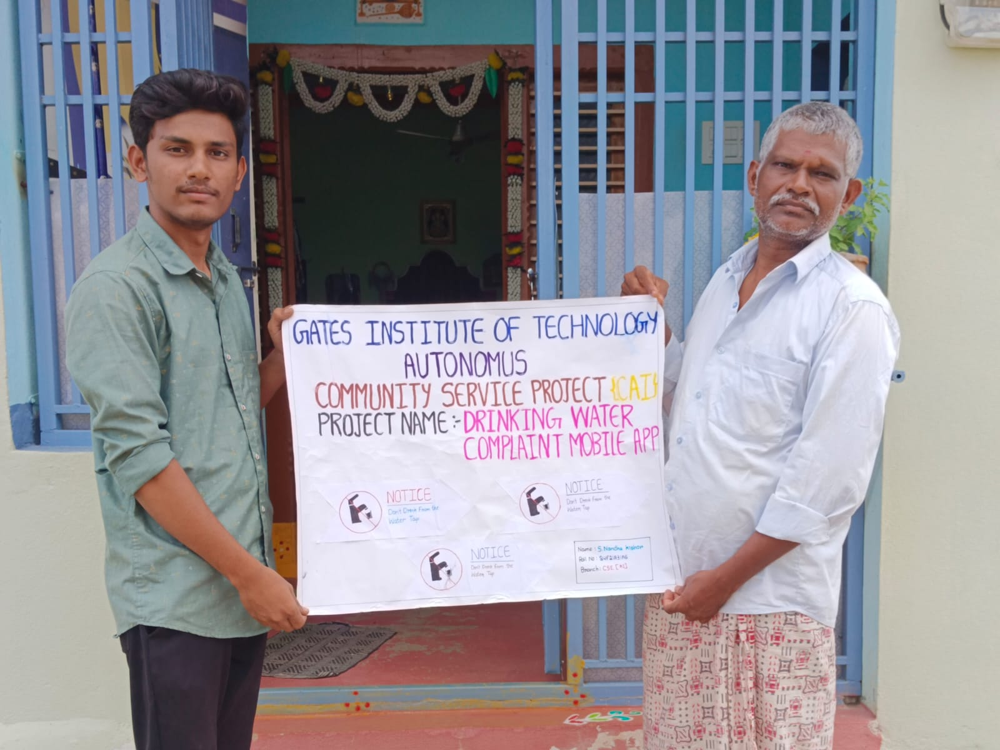
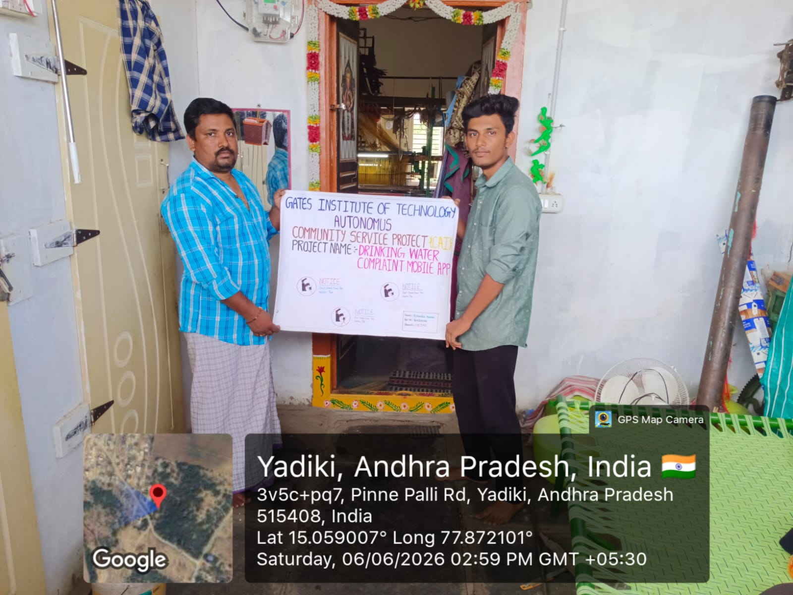
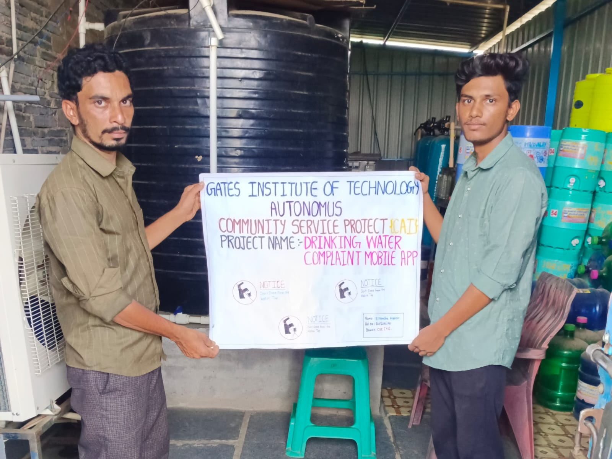

11. Water and Sanitation Apps (121-130)
Drinking Water Complaint Mobile App
Community Service Mini-Project
SANA NANDHA KISHOR
31A6
CSP XIX Batch - B Section Batch-IX
Mrs. B Drakshayani
11. Water and Sanitation Apps (121-130)
This Drinking Water Complaint Mobile App is a community service mini-project designed to help citizens report water-related issues such as contamination, supply disruption, pipeline damage, and quality concerns. The web portal provides an easy way to file complaints, track status, and connect with water board services for faster resolution and safer drinking water in the community.
Visual documentation of the Drinking Water Complaint Mobile App project.






Visit the main website to file a complaint or track your water issue status.